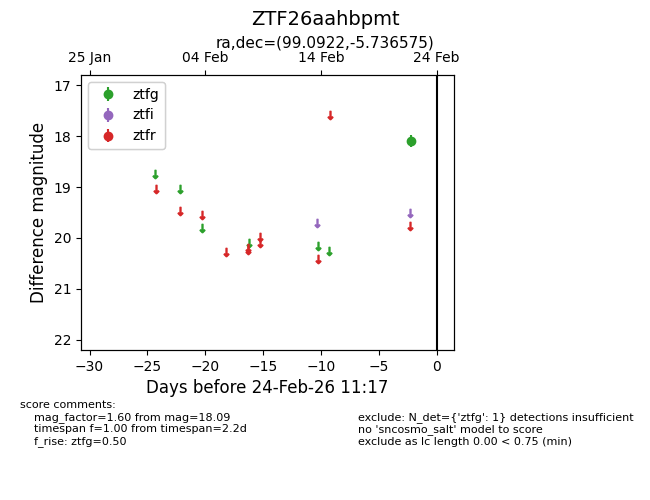
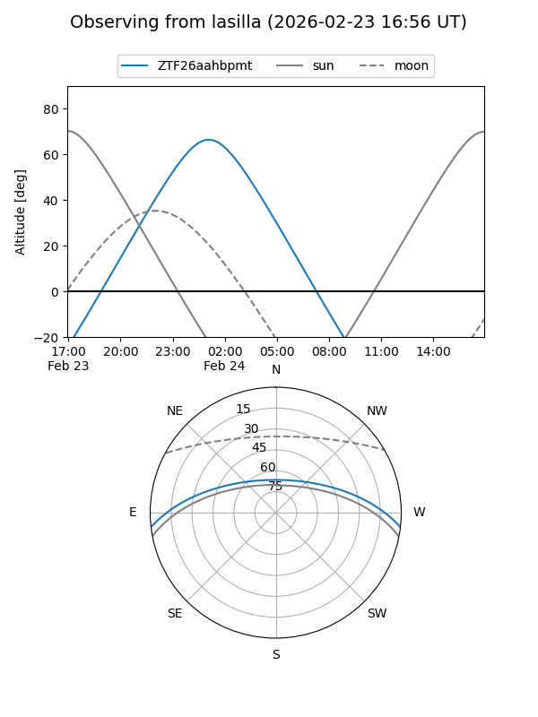
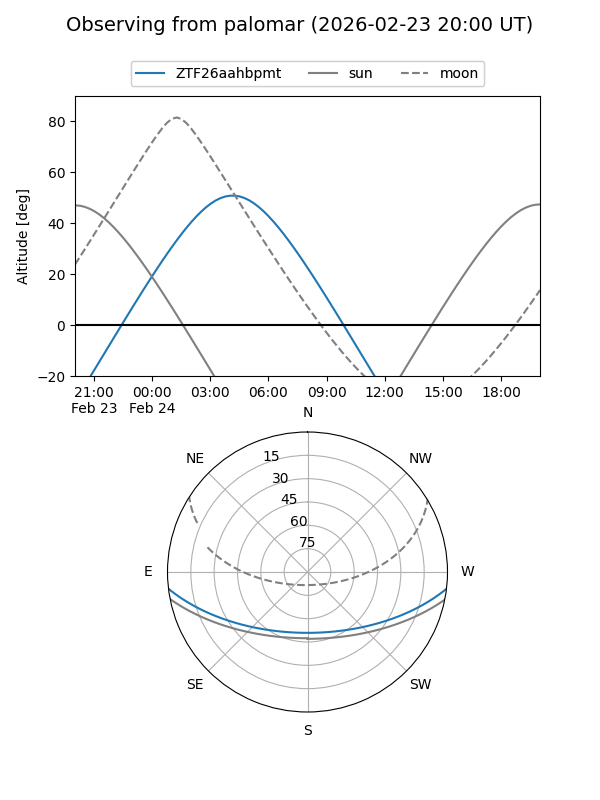

ZTF26aahbpmt
Target ZTF26aahbpmt at 2026-02-24 11:19
Aliases and brokers:
FINK: link
Lasair: link
ALeRCE: link
alt names
ZTF26aahbpmt (ztf,fink_ztf)
Coordinates:
equatorial (ra, dec) = 99.0922,-5.73657
equatorial (HMS+DMS) = 06:36:22.14,-05:44:11.67
galactic (l, b) = (216.3413,-5.95573)
Flags:
Photometry:
last ztfg=18.09
1 ztfg detections
Lightcurve

Visibility


Additional plots